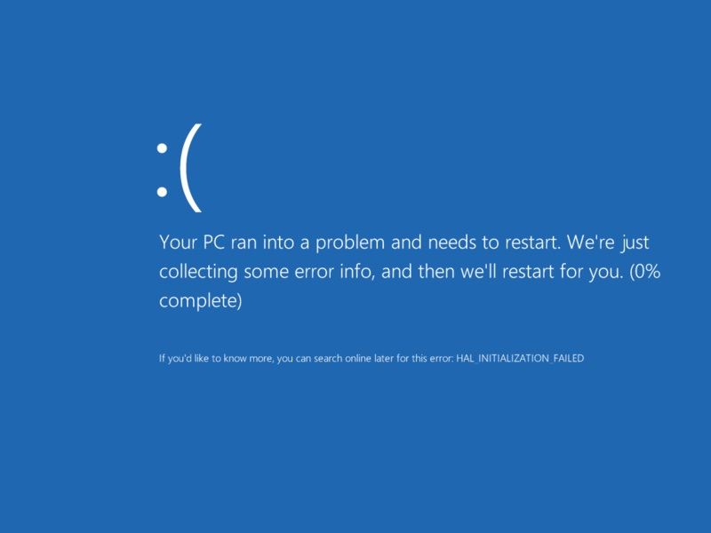

john speare
student portfolio
Here are some papers and projects I've done this year.
Internet Language and Its Influence on Microsoft Documentation and User Interface
There's an emoticon on Windows 8 Blue Screen of Death. Has internet languange become *that* normalized?

Information Design Project: Oven Pancake
After spending a quarter in the depths of information, visual, and design theory, I wanted to apply it. I created a recipe design that shows how to make a yummy breakfast treat. As it turns out, creating an "easy" or "simple" design is friggin' hard.

Papers
Here are some papers I've written this year in the Rhetoric and Technical Communications graduate program.
- ENGL 503: Gestalt, Grice, Riley, Parker, Kostelnick, and Dummies(.pdf)
Why are the "Dummie" books so successful? Well, there are lots of reasons, but I'm sure that the coolest sounding reason is this: Implicature. - ENGL 575: Some Useful Manifestations of Contemporary Rhetoric (.pdf)
Post-modern rhetorical theory is dense and problematic in many ways. In this paper I attempt to square up my sprawling thoughts by forcing contemporary theory into a framework that describes how we might find rhetoric useful today. whew! - Incorporating Critical Technical Literacy into a College Composition Program(.pdf)
Most scholars would agree that we ought to incorporate digital literacy into our composition courses. But what might this look like? This paper reviews some digital projects and evaluates them according to critical digital pedogogy. It also describes why a composition department-specific web server is a preferred student publishing solution.